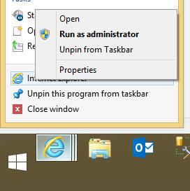
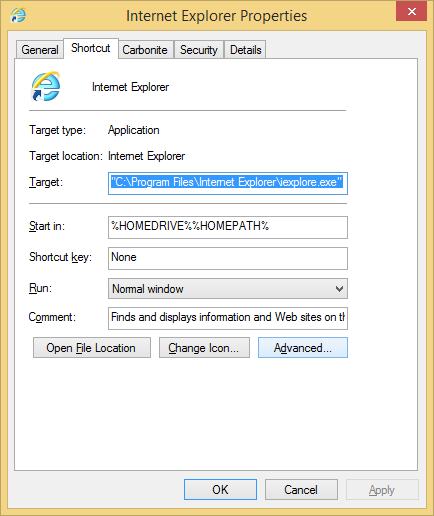
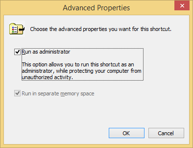
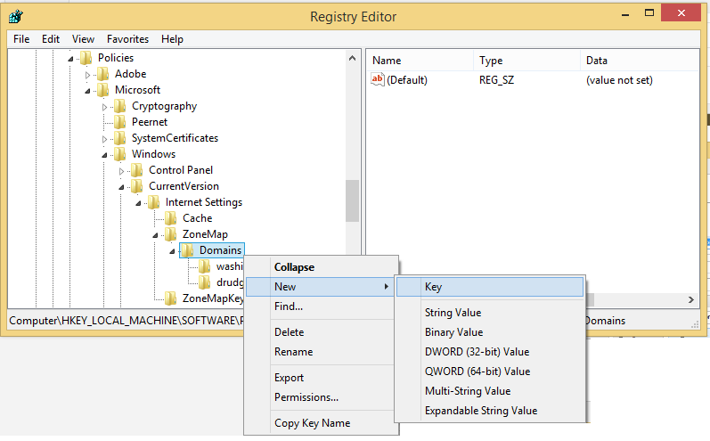
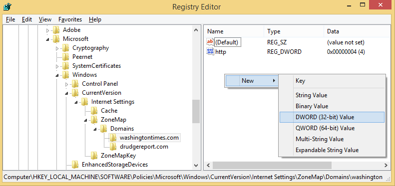
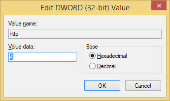

Restricting Bad Websites in IE After IT has Applied Group Policy
In case you didn't already know, you can block poorly made sites from running JavaScript/Flash/etc. in Internet Explorer by adding them to the Restricted Sites security zone. In 8 clicks (I know it's a lot, but I usually only have to use it once), I can prevent a site from running all those obnoxious ads and scripts and let me just read the content. I've been able to block Drudge Report's meta refresh and WashingtonTimes's ads.
Why not use Browser X which is vastly superior to IE in every way, you ask? Because I'm not a browser fan-boy, that's why. I don't feel like installing a new browser on every machine I own or use. IE favorites and settings sync across my devices, and I like this feature. Also, your "my browser is faster!" claim has not been a human-measurable value since IE 6. More than likely your intense hatred for IE is based soley on your experience with IE 6 which is kind of irrational when you consider they are on version 11. Nothing against other browsers (except Firefox, you suck as a company!), but IE is a perfectly cromulent browser that grandma can use. There is no need to force grandma to download a new browser, you weird browser fanboys.
This was all working just fine for me until our IT dept decided to add my company laptop to the domain and group policy took away my ability to add sites to the Restricted Sites security zone. Well, I found a way around this, and it looks like I might be able to add sites in fewer clicks if I automate this process a little. My logon is a local administrator account on my laptop, and that may be a requirement to follow these steps.
- Run Internet Explorer as Administrator
- Right click Internet Explorer icon in the taskbar
- Right click Internet Explorer in the context menu
- Click Properties
 - Under the Shortcut tab, click Advanced
 - Check Run as administrator
 - Click OK
- Click OK
- Add sites to the Restricted Sites zone registry key
- Type regedit.exe at the Start menu and hit [Enter]
- Navigate to HKEY_LOCAL_MACHINE\SOFTWARE\Policies\Microsoft\Windows\CurrentVersion\Internet Settings\ZoneMap\Domains
- Right click Domains, click New->Key
 - Name the new key after the domain name to restrict (e.g. washingtontimes.com)
- Select this new key and right click inside the right pane, click New->DWORD (32-bit) Value
 - Name this new value the protocol you want to restrict (e.g. http, https, etc.)
- Double click this value to open the Edit DWORD (32-bit) Value dialog
 - Change Value data to 4, and click OK.
The next time you visit a domain listed now in your registry, you should notice that it isn't running JavaScript or other time consuming, annoying features.
I hope to automated the addition of sites to my registry in the near future. I'll blog about it if I do.
Update (2015-01-23):
Apparently I need to block group policy from changing my registry values too.
Open up regedit.exe again
- Right click HKEY_LOCAL_MACHINE\SOFTWARE\Policies\Microsoft\Windows\CurrentVersion\Internet Settings\ZoneMap\Domains and clicked on Permissions... from the context menu.
- Click on Advanced.
- Click Disable inheritance and select Convert inherited permissions into explicit permissions on this object.
- Click the SYSTEM account and the Edit button.
- Uncheck Full Control and click OK.
- Click Change at the top next to Owner: SYSTEM.
- Click Locations and set the location to your local machine.
- Enter Administrators into the dialog box and click OK.
- Check Replace owner on subcontainers and objects and click OK.
- Click OK again.
I'll let you know if that doesn't prevent group policy from overwriting my entries.
Update (2015-02-04)
Apparently that didn't work either. I'm going to further restrict SYSTEM and let you know how that goes.
- Follow all the previously mentioned steps if it looks like your registry changes have been reverted.
- Right click HKEY_LOCAL_MACHINE\SOFTWARE\Policies\Microsoft\Windows\CurrentVersion\Internet Settings\ZoneMap\Domains and clicked on Permissions... from the context menu.
- Click on Advanced.
- Click the SYSTEM account and the Edit button.
- Change Type to Deny.
- Click Show Advanced Permissions and check Set Value, Create Subkey, Create Link, Delete, Write DAC, Write Owner.
- Click OK.
- Click Add, click Select a Principal, set location to your local machine, enter SYSTEM where it says Enter the object name to select (examples): and click OK.
- Check Read and click OK.
- Click OK and OK.
You should now have denied the SYSTEM account all ability to alter the Domains registry key as well as any child nodes, but it should still be able to read it.